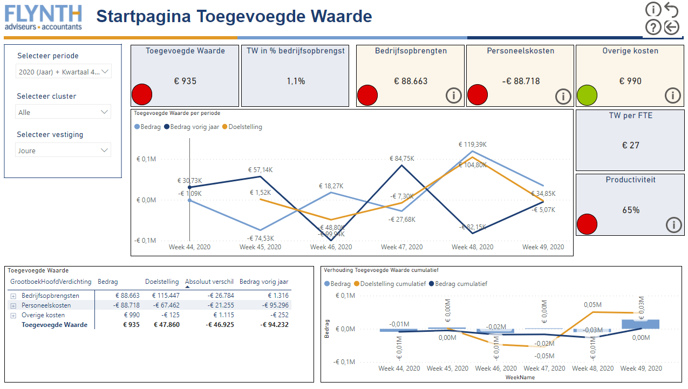
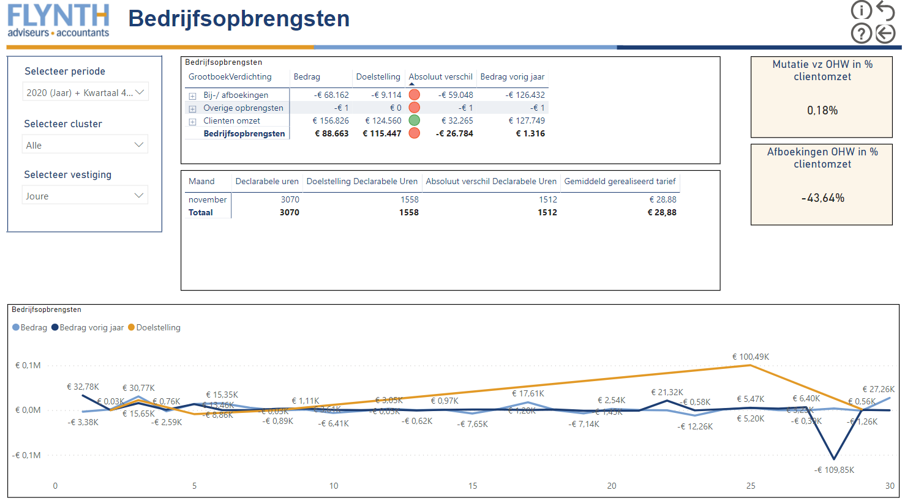
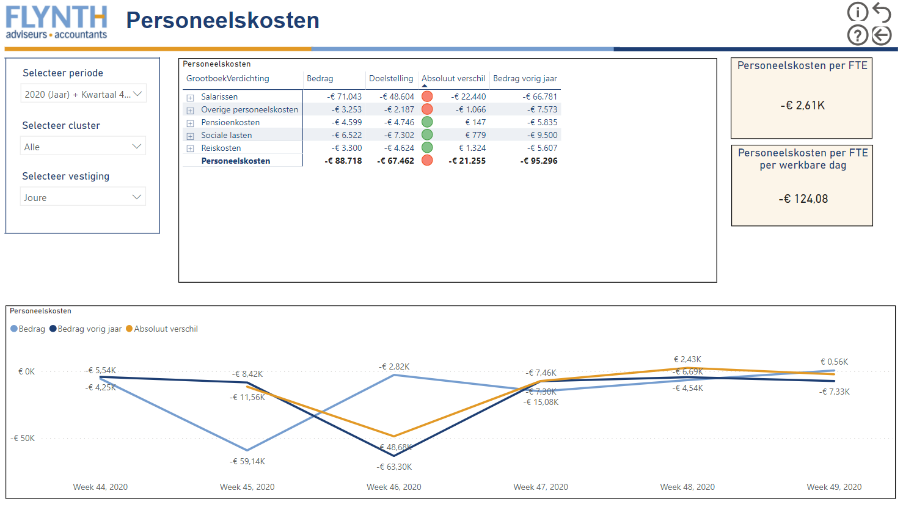
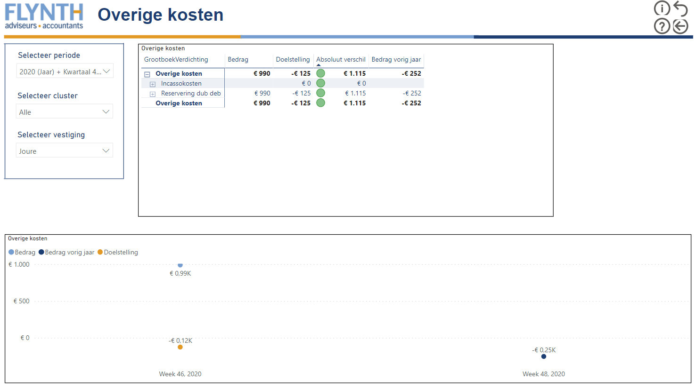
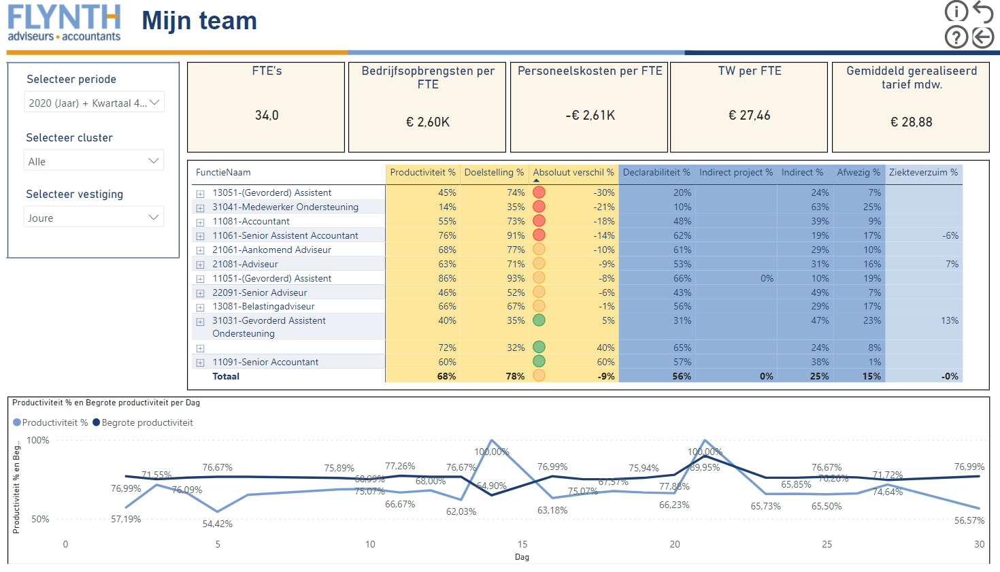
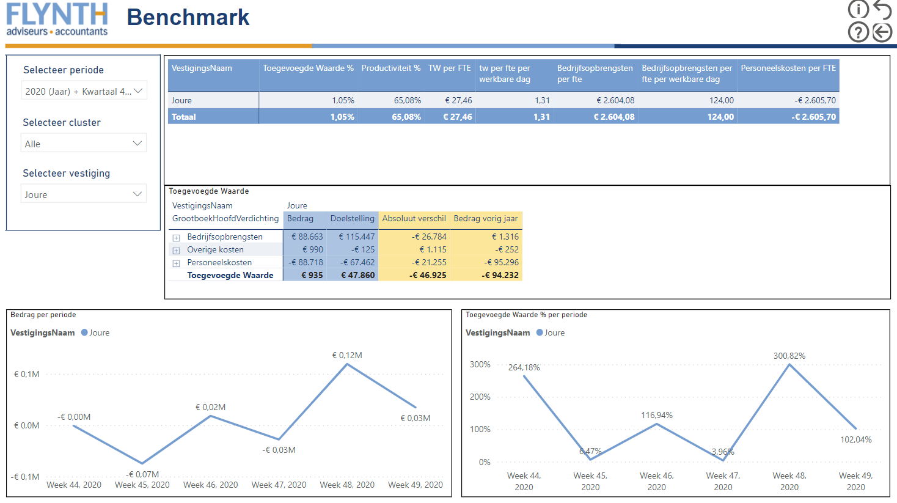

Dashboard Toegevoegde waarde
In dit hoofdstuk behandelen wij het dashboard Toegevoegde waarde. Dit dashboard hebben wij in opdracht van Flynth accountants en adviseurs gemaakt.
Het dashboard
Het dashboard bestaat uit verschillende pagina’s die gebruikt kunnen worden om op de Toegevoegde waarde van Flynth te sturen. Voorheen stelde de controller van Flynth een Toegevoegde waarde rapportage op en verstuurde zij hem via pdf-documenten naar de managers binnen Flynth. Om deze rapportages op te stellen kost te veel tijd, deze tijd kan ook ergens anders benut worden. Wij hebben een dashboard gemaakt die het maken van de rapportage overbodig maakt. Ten opzichte van de oude rapportage die iedere maand werd verstuurd is ons dashboard iedere dag up to date.
Berekening Toegevoegde Waarde
Flynth berekent haar Toegevoegde Waarde door de Bedrijfsopbrengsten te verminderen met haar Personeels- en Overige kosten.
Startpagina Toegevoegde waarde
De Startpagina Toegevoegde Waarde hebben wij gemaakt om meteen een goed overzicht te hebben hoe het ervoor staat met de Toegevoegde Waarde. Op deze startpagina kan meteen een conclusie gemaakt worden of doelstelling gehaald worden.
Wij hebben verschillende tegels weergegeven met Stoplichten. Deze stoplichten geven aan of de begroting gehaald wordt of niet. Je kan vervolgens kiezen of je verder wilt inzoomen op de tegels door op de informatie Knop te klikken.
Bedrijfsopbrengsten
Door naar de pagina Bedrijfsopbrengsten te gaan krijg je te zien welke opbrengsten je hebt gehad in de periode die je geselecteerd hebt. Op deze pagina zie je welke doelstellingen je wel of niet hebt behaald. Een manager kan op deze pagina de indicatie krijgen op welke opbrengsten die meer moet gaan sturen.
Naast de Bedrijfsopbrengsten kan de manager ook de declarabele uren zien. De declarabele uren zijn uren die naar de klant geschreven worden. De declarabele uren maal het gemiddeld gerealiseerd tarief zijn de totale bedrijfsopbrengsten.
Personeelskosten
Op deze pagina staan alle directe kosten die Flynth maakt. Deze pagina geeft inzicht in welke kostensoort er bijvoorbeeld te veel kosten worden gemaakt. Flynth stelt doelstellingen voor hoeveel directe kosten iedere vestiging mag maken in een bepaalde periode. Het is belangrijk dat deze pagina er is want managers krijgen hier direct inzicht in hoeveel kosten ze hebben en nog mogen maken.
Overige kosten
Wij hebben ook een pagina gemaakt voor de overige kosten die niet bij de Personeelskosten horen. Deze kosten zijn vaak niet veel, echter is het wel een belangrijke pagina. Hier worden de afschrijvingskosten voor de dubieuze debiteuren weergegeven. De kosten zijn voor debiteuren waarvan je verwacht dat ze niet meer gaan betalen. Deze kosten zijn vaak verschillend per maand, daarom is inzicht in deze kosten niet overbodig.
In de toekomst komen er waarschijnlijk nog meer Overige kosten die ook op deze pagina worden weergegeven. In eerste instantie hadden wij ervoor gekozen om deze kosten bij de Personeelskosten weer te geven. Door de feedback die wij hebben gekregen hebben wij ervoor gekozen om ze toch op een eigen pagina weer te geven.
Mijn team
De managers binnen Flynth hadden als wens om op medewerker niveau te kunnen sturen. Voor deze wens hebben wij een teampagina gemaakt. Op deze teampagina worden alle medewerkers binnen de vestiging weergegeven. Iedere medewerker heeft een doelstelling voor productiviteit die vooraf wordt opgesteld. De productiviteit wordt bepaald aan de hand van de geschreven uren van de medewerker. Hoe meer declarabele uren de medewerker schrijft hoe beter zijn productiviteit is.
Naast Declarabele uren worden er ook indirecte uren geschreven die niks opleveren voor Flynth. De indirecte uren willen de managers zo laag als mogelijk houden. De afwezige uren levert ook niks op voor Flynth dit kan wel een oorzaak zijn waarom de productiviteit te laag is.
Naast de tabel van productiviteit worden er ook verschillende kengetallen weergegeven waar de managers op willen sturen.
Benchmark
Er was ook een wens van de managers om een pagina te maken waar ze hun eigen vestiging op kunnen vergelijken met andere vestigingen. Hiervoor hebben wij de pagina Benchmark voor gecreëerd. De belangrijkste cijfers en kengetallen kunnen ze met elkaar vergelijken. Het doel van deze pagina is dat ze kunnen vergelijken, waardoor ze in contact kunnen komen met andere vestigingen.
Het dashboard
Klik op de afbeeldingen om ze te vergroten.
Startpagina
Bedrijfsopbrengsten
Personeelskosten
Overigekosten
Mijn team
Benchmark
